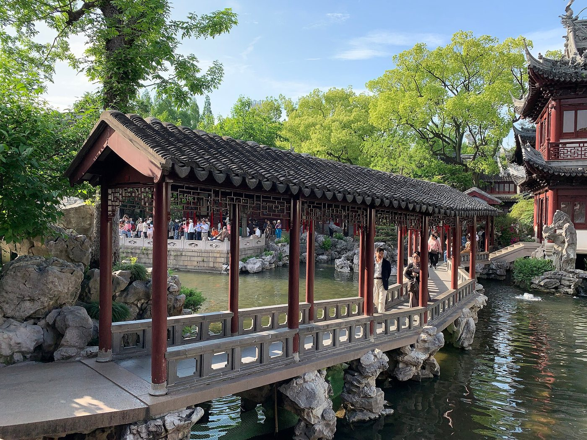
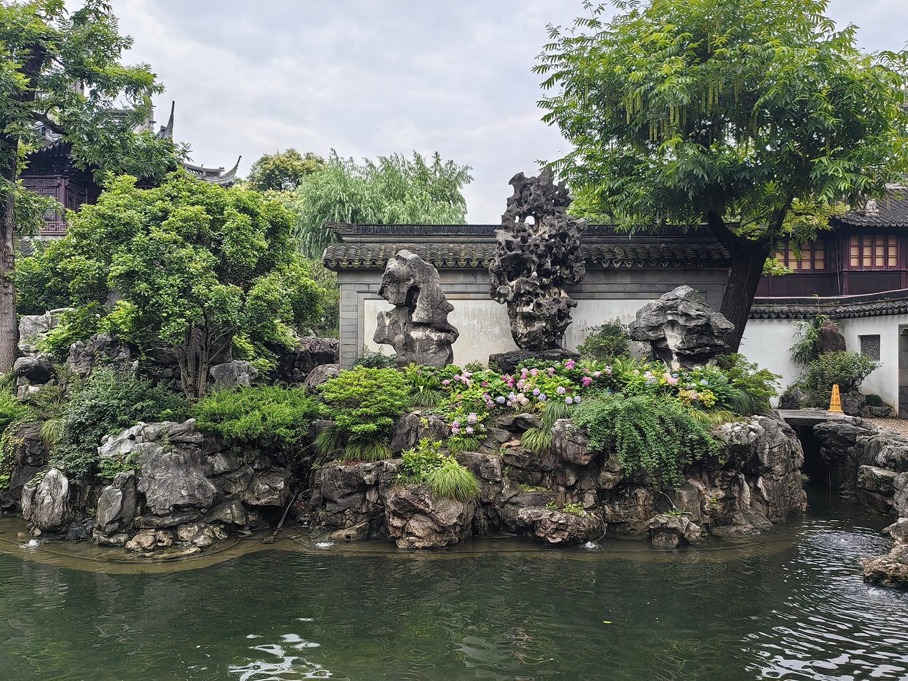
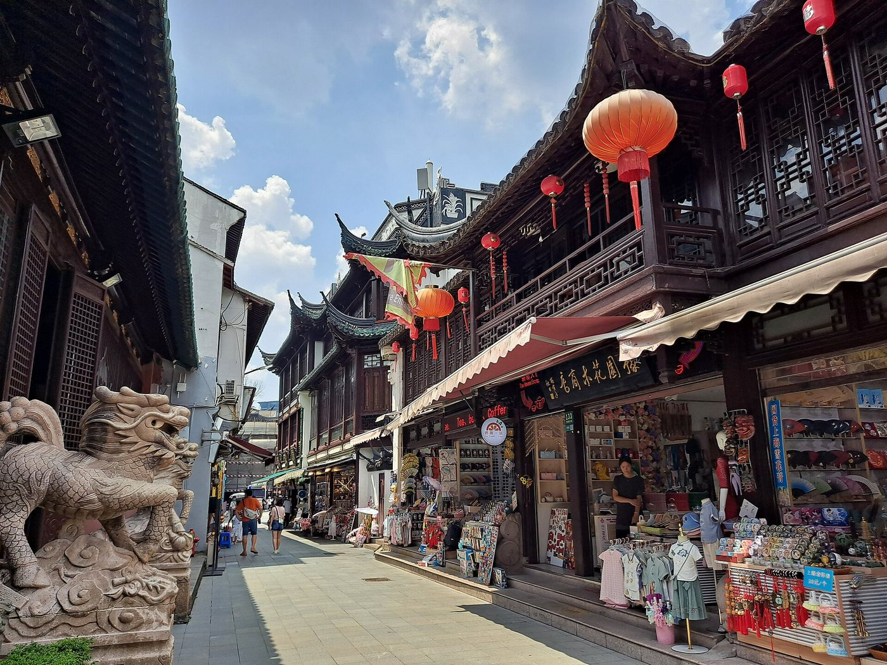
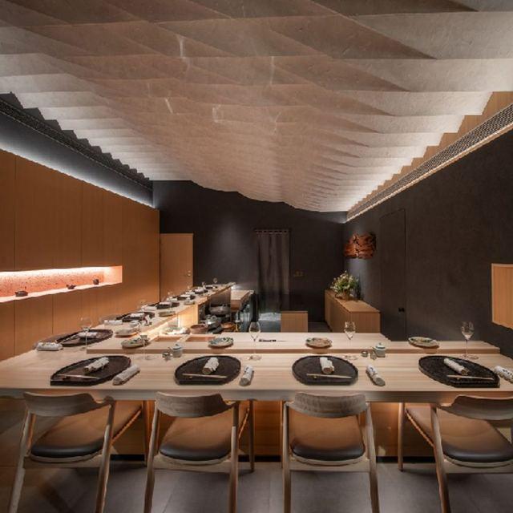

Yu Garden and the old city bazaar 豫园（豫园商城、城隍庙）
Classical garden and old-city district · Huangpu
CheckedPrices and hours read · 15 Nov 2026




The Ming garden is CNY 40 on 24-30 Nov; the bazaar lanes are free. Last entry 16:00; shut Mondays.
Why it matters
A Ming-dynasty private garden, begun in 1559 by Pan Yunduan for his father and finished in 1577. It is a scholar-official's world in miniature: dragon-topped walls, rockeries and a 3.3 m, 5-tonne holed boulder. The Small Swords Society used Dianchun Hall as its base from September 1853 to February 1855. The garden opened to the public in 1961.
What to see
Exquisite Jade Rock (玉玲珑), Dianchun Hall (点春堂, built 1820), the dragon walls, ponds and rockeries, and the Nine-Turn Bridge to the Mid-Lake Pavilion tea house (湖心亭). Outside the paid garden: the free bazaar and City God Temple streets.
How to get there
Line 10 or 14 to Yuyuan Garden; walk to the South Gate (by the Nine-Turn Bridge) or the North Gate (Fuyou Road); buy a ticket at the window.
Local tip
Garden first, then the bazaar and City God Temple for lunch. The tale that the Jade Rock fell off a boat meant for Emperor Huizong is only a rumour.
Watch out
Crowds and tourist-price food in the bazaar; weekends and holidays are packed. Closed Mondays. Do not arrive after 16:00. The lantern festival runs January to March, so it is not on in late November.
Did you know
By the usual account, Huang Mingxian of Nanxiang refined the meat bun with jellied filling in 1871; in 1900 two Nanxiang craftsmen opened the Yu Garden shop that became Nanxiang Steamed Bun Restaurant. The craft is national intangible heritage (2014).
Count the pleats yourself: the traditional description is 14, though a modern master's bun is reported with 16, so it is not a standard.
Caveat and sources
1871 and 1900 are conventional dates, not firm documents (the gazetteer's own source is not cited). The present building is a 1992 reconstruction, upgraded in 2026. Address: the Shanghai government page says 87 Yuyuan Road, Michelin says 85; show the driver 南翔馒头店 and 九曲桥. Hours 7:30-20:30, about CNY 93 a head; often queued, Michelin advises arriving before 10:30.
- Shanghai government English portal, 2026english.shanghai.gov.cn Opens in a new tab
- The Paper (Jiading district, Shanghai Local Chronicles Office), 2018thepaper.cn Opens in a new tab
- gov.cn (State Council notice on national heritage), 2014gov.cn Opens in a new tab
- Michelin Guide (Nanxiang Steamed Bun, City God Temple)guide.michelin.com Opens in a new tab
What was checked, and what was not
Read on 15 Nov 2026
Yu Garden's own visit page was read on 15 Nov 2026 (undated): hours, closing day, last entry, prices and gates match, and a 2026 guide agrees. History checked against Wikipedia.
Not checked
No official word on foreigners: the page names no passport or reservation rule (a 2024 city notice lists the garden among real-name ticket venues). Bazaar light-show times and walking times are not checked.
Sources
Nearby

Numata Sou 沼田双天妇罗
Likely